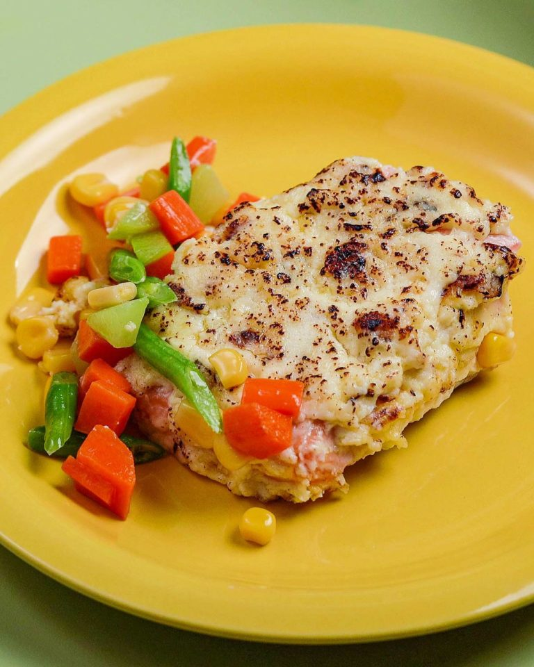

Conti's Baked Salmon

Description
Conti’s baked salmon is synonymous with holiday celebrations as Pinoy spaghetti and marshmallow hotdogs are with kids’ parties. It’s the go-to ~fancy~ seafood addition, its aluminum tray stealing the spotlight from the likes of fish fillet and rellenong bangus. Break it down, however, and its premium facade falls to reveal what it really is—just cream, a slab of salmon, and buttered vegetables.
Ingredients
Cream Topping
- 1 cup cream cheese
- 1/2 cup Kewpie mayonnaise
- 1/2 cup all-purpose cream
- 1 1/2 tbsp minced garlic
- 1 tbsp lemon juice or calamansi juice
- 3 tsp sugar
- 1/2 tsp salt
- 2 tbsp all-purpose flour
Salmon
- 700g salmon
- Salt, to season
Vegetables
- 2 tbsp butter, unsalted
- 1/3 cup carrots, small diced
- 1/3 cup sayote, peeled and diced
- 1/3 cup green beans, trimmed and cut into 1-inch pieces
- 1/3 cup corn
- Salt, to taste
Steps
- Preheat oven to 350F (180C).
- In a bowl, combine cream cheese, Kewpie mayonnaise, all-purpose cream, minced garlic, lemon or calamansi juice, sugar, salt, and all-purpose flour. Alternately, combine the mixture in a food processor to make it smoother. Set aside.
- Pat dry salmon and season with salt.
- Lay the salmon skin-side down on a baking tray lined with parchment paper
- Spread the cream topping onto the salmon, making sure to cover the surface.
- Place the salmon in the oven and bake for 15–20 mins.
- Meanwhile, add butter to a pan over medium heat.
- Add carrots and sayote and saute until slightly softened.
- Add green beans and cook until softened.
- Add corn and cook for 1–2 mins.
- Season vegetables with salt and set aside.
- To plate, transfer the salmon onto a deep platter, then surround it with the buttered vegetables.
- Serve warm.